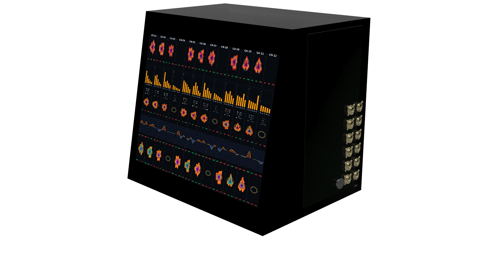
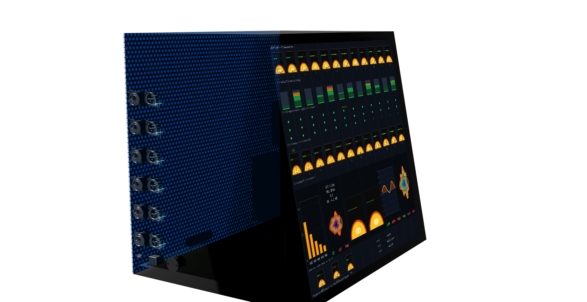
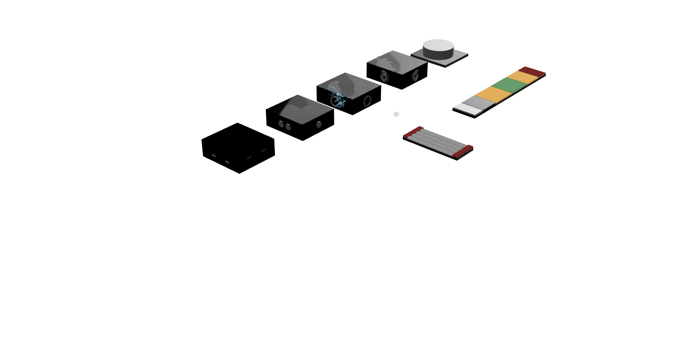
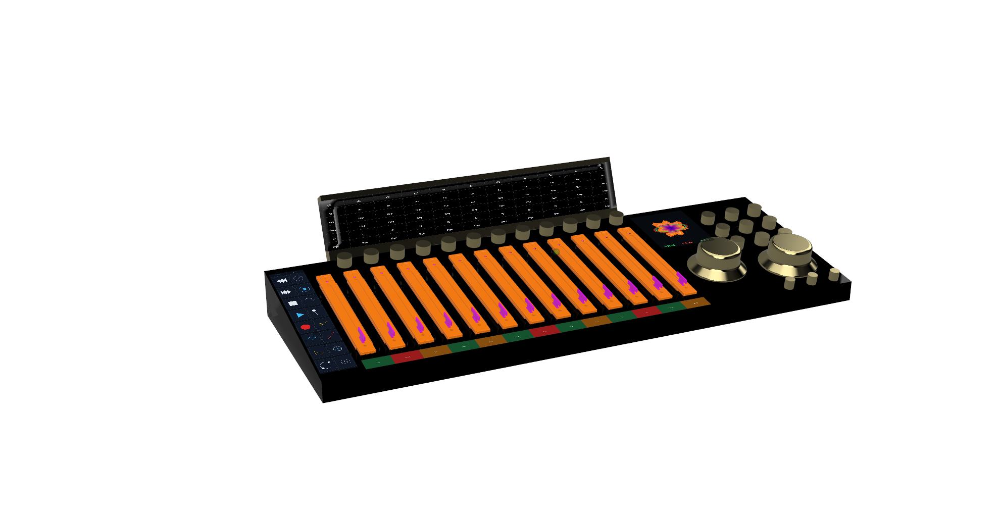
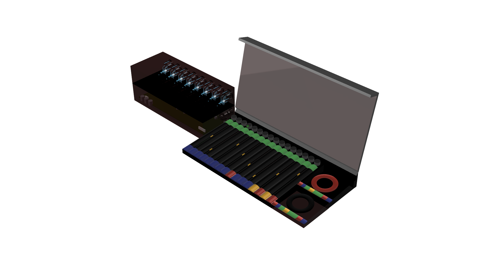

Ecosystem render — racks, surface, and entry nodes as one coherent system.
AIP / Project 2075 · Six-State Alliance · Guardian
System Q
A unified, analog-first studio ecosystem. Plug in, track, mix—everyone in the room knows what’s happening, everyone controls their own world, and the system stays as clean or as colored as you want it.
01 — Philosophy
The whole point is that everyone in the session—engineer, producer, musician—can do their own thing without stepping on each other. The system is coherent: what one person changes is visible to everyone who needs to see it, and invisible to everyone who doesn’t.
No manuals at the session. No “which cable goes where.” You show up, you plug in, and the environment is ready. Quick, easy, simple—so the focus stays on the music.
02 — Hardware
The racks are the analog signal chain: preamplification, harmonics, dynamics, EQ, transient shaping, and the monitoring/summing zone. They’re arranged in an intentional order so the sound is repeatable and the workflow is obvious.
Clean, colored, transformer, tube—dial the character you want, then route and monitor it without tearing the session apart.


03 — Modular I/O
The cubes are small, modular I/O nodes—floor, desktop, or rack-edge. For people who are less concerned about squeezing out the absolute finest analog quality and prefer simplicity, a cube is all they need. USB in, balanced analog out, headphone jack, done.
They talk to the central system and to each other. You can use one standalone or group them together. They’re the entry point into the ecosystem for anyone who just wants to plug in and play without thinking about the full rack.

04 — Command
The central controller and its companion software facilitate every possible function in the system. Faders, encoders, touch strips, transport, automation—one surface that addresses every stage in every channel across both racks.
The software presents the same processing model the hardware implements, so what you see on the screen matches what’s happening in the racks. Routing, metering, presets, session management—one mental model from input to output, whether you’re at the desk or on a networked client.

05 — Control
Hands-free control for tracking flow: punch, talkback, cue actions, and whatever the session needs without interrupting performance.
It’s built to keep the room moving: fewer handoffs, fewer stops, more takes.

06 — Output
Venue is the live speaker output and room translation layer: scalable monitor routing, speaker management, and a consistent system output whether you’re in a control room, rehearsal space, or a small stage.
It’s also where playback and final checks live: print references, play back takes, and confirm the mix translates to the room without breaking the session flow.

Hardware chain from preamp to conversion. Dial in any character—clean, colored, or tube-saturated.
Show up, plug in, track. The system handles routing, clocking, and monitoring so you start making music immediately.
Every musician controls their own headphone mix. No amps, no extra rig—just the network and your ears.
Surface, software, and hardware present the same signal flow. What you touch is what you hear.